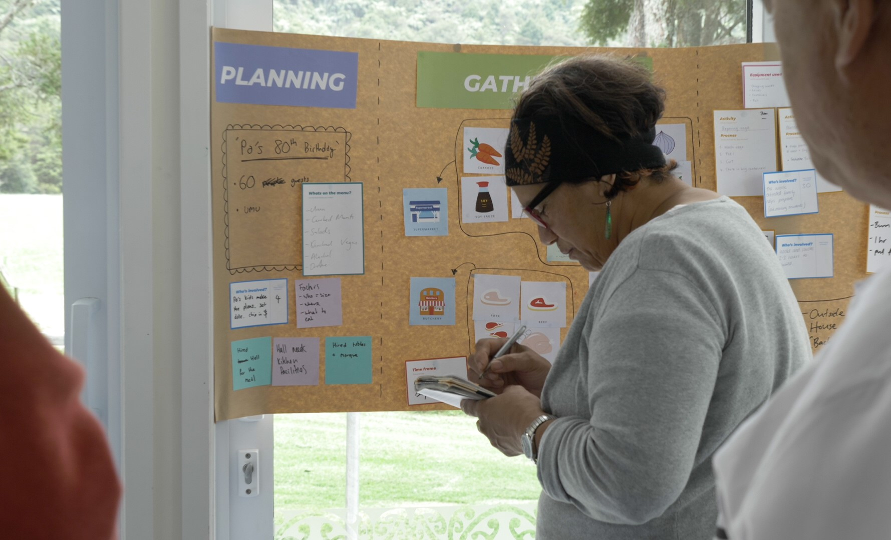
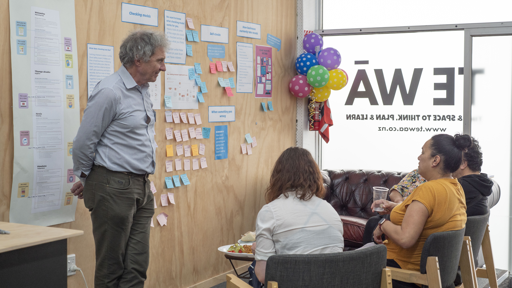

Food Safty Kit - Te Kete Haumaru Kai
Te Kete Haumaru Kai (The Food Safety Kit) aims to empower marae in the Far North to enter the commercial setting of hosting marae stays for manuhiri (visitors).
The Kete contains bilingual resources detailing the food rules and requirements. Inside the kete are booklets, a flipchart, videos, posters, stickers, and magnets.
I was part of the project team behind Te Kete Haumaru Kai, co-designed with six marae in partnership with Northland Inc. I supported and facilitated service design workshops to understand user needs, mapped current food safety practices, and co-led co-design and testing sessions to develop practical, culturally grounded resources.
Through our workshops, we discovered that food safety knowledge is traditionally passed down through storytelling and hands-on learning, so we designed highly visual resources. The videos feature a Māori chef demonstrating common marae recipes while sharing food safety tips, making the content relatable and culturally resonant.


I also assisted with the design of the visual resources and directed the production of video content, liaising with the videographer, talent, and technical advisors to ensure alignment with the design vision.
The video below shows the contents of the kete.
Food safety videos
I directed the production of the videos. Each videos uses colour and icons to link to specific topics in the other resources. The video below focuses on temperature control and walks you through cooking, cooling, and storing food safely.
Partnership and co-design process
See the video below for more detail on our partnership and co-design process with marae.
Credits
Janet Lymburn – Project Lead
Alesha Garton – Visual Design
Katie Watson – Visual Design
Krystle Chester - Service Design
Mon Patel – Service Design
Chris Hewins – Technical Advice
Naomi Toilalo – Video Talent